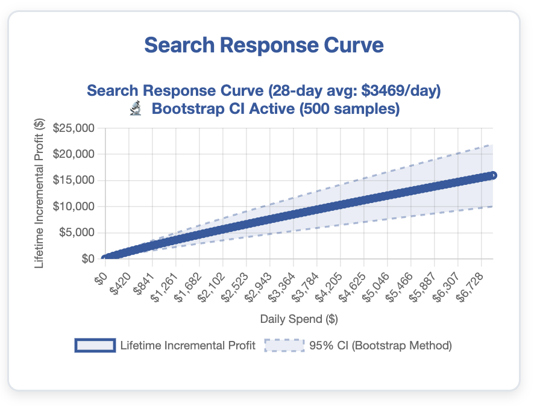
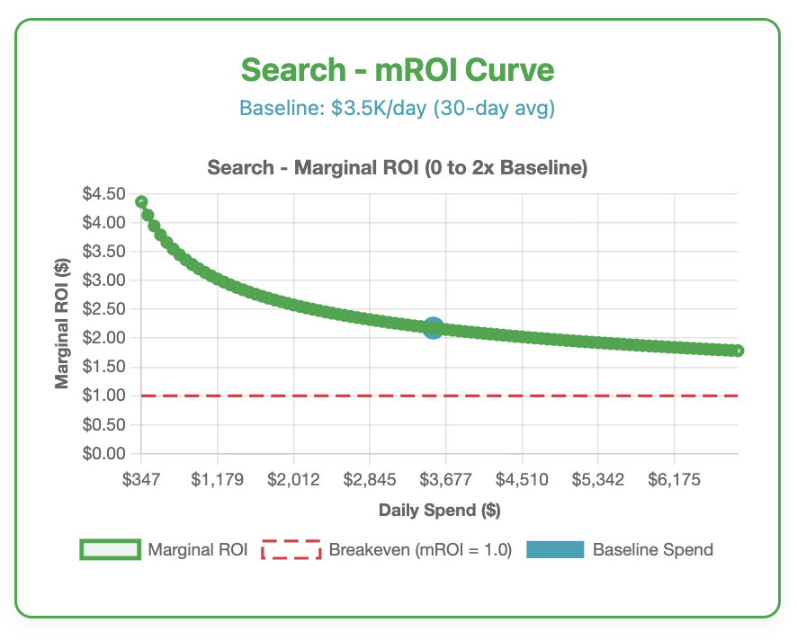

Transparent, data-driven insights that show you what's really working
Attribution and lift tests show whether your channels are driving results and incremental lift, but they don't tell you how much to spend on each channel. That's what response curves answer—and why they're one of the most underutilized tools in marketing measurement.
The real question is: "How far is your runway?"
Marginal ROI curves show you exactly where your next dollar starts working less hard. They're the difference between "scale what's working" and "scale until it stops working."
If your current measurement infrastructure doesn't show you this, you're optimizing blind.


Different channels have different saturation curves. Some have long runways for scaling, others hit diminishing returns quickly.
We build response curves and marginal ROI analysis for every channel at MMM Unwrapped.
Media Mix Modeling uses statistical analysis to understand how each marketing channel contributes to your business outcomes—independent of what platforms report. It's the gold standard for marketing attribution used by Fortune 500 companies.
Attribution shows if a channel is working. MMM shows how much to spend on each channel for optimal results.
See true performance without inflated platform metrics that all claim credit for the same conversion.
Finally understand the impact of TV, OTT, and other upper-funnel channels that don't have direct attribution.
That's the implicit message from most MMM vendors: here's your deck of numbers with little visibility into how we got there. You're not paying $100K+ for slides and a black box. You want to truly understand your media spend.
Spend data, seasonality factors, promotional periods, external variables
Statistical approaches, validation techniques, model selection criteria
Adstock effects, saturation curves, baseline performance
See how TV saturation, promo periods, or brand search are treated
Because if you don't understand the model, you can't pressure-test the outputs. You can't have informed conversations with finance and leadership. You can't confidently reallocate your budget.
Transparency isn't a feature. It's the whole point.
See exactly where diminishing returns start and how far you can scale each channel profitably.
Know the ROI of your next dollar spent in every channel, not just historical averages.
Clear guidance on where to increase spend, where to pull back, and expected impact.
Understand true contribution of each channel, accounting for adstock and saturation effects.
Cross-validation MAPE, R-squared, directional accuracy, and pass/fail diagnostics.
We don't just hand you a dashboard. We help you interpret findings and implement changes.